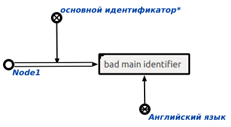

Команда замены основного идентификатора sc-элемента на указанный файл предназначена для удаления старого основного идентификатора и установки нового, выбранного пользователем. Первым аргументом запроса является sc-элемент, основной идентификатор которого требуется заменить. Вторым аргументом запроса является файл, который нужно установить в качестве нового основного идентификатора. Результатом выполнения команды является исправленный основной идентификатор данного узла. Пример замены основного идентификатора sc-элемента показан ниже (слева - исходный граф для замены основного идентификатора, справа - исправленный в соответствии с нужным основным идентификатором):
